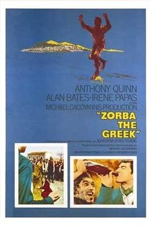

Zorba the Greek
37th Academy Awards
(Oscars 1965)
7 Nominations, 3 Awards
| Nominations | ||
|---|---|---|
| Category | Nominees | Result |
| Best Picture | Michael Cacoyannis | Nominated |
| Actor | Anthony Quinn | Nominated |
| Actress in a Supporting Role | Lila Kedrova | Won |
| Directing | Michael Cacoyannis | Nominated |
| Writing (Screenplay--based on material from another medium) | Michael Cacoyannis | Nominated |
| Cinematography (Black-and-White) | Walter Lassally | Won |
| Art Direction (Black-and-White) | Vassilis Fotopoulos | Won |